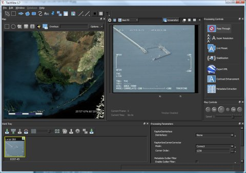
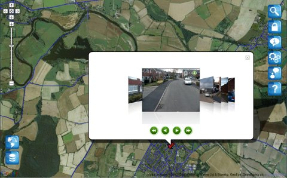
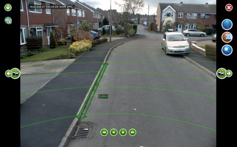
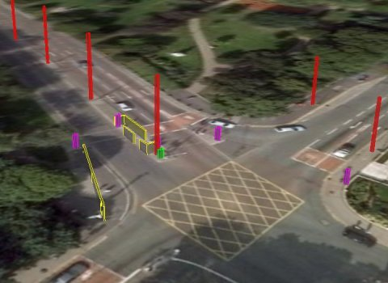

Services
Greveson Consulting offers software development services, from small projects to larger, modular system architectures. We also have experience with other aspects of computing, such as hardware purchasing and setup, network design and configuration, embedded systems development, and agile project management. However, application, server and library programming forms the core of our work, and we aim to create exciting, intuitive and reliable products, tuned to your needs. We have particular expertise in 3D visualization, mapping and GIS applications, database design, and computer vision.
Some examples of the type of work we have done in the past are given below.
Desktop application design and development
We have experience in creating state of the art 3D visualization and video processing desktop applications, with an emphasis on user-friendly design. While working for 2d3 Ltd, Eric was part of the team developing the TacitView product, with responsibility for the map and database design and development, in addition to developing other parts of the application. This application was developed in C++, using several third-party libraries such as Boost, Qt, GDAL and Microsoft .NET. The database is designed to have modular, switchable plugins, with an SQL server plugin providing the default datastore. The application was developed in a cross-platform, maintainable manner, using the Scrum agile development practice. This enabled the team to make regular, rapid releases of the product, with customer requirements being transformed into usable features and improvements within days and weeks rather than months.
{kind=link}
Web application design and development
As part of the Yotta DCL development team, Eric designed and built their Terra web-based inventory and image viewer. This system provides a front end for fast access to terabytes of video and highway inventory data, and supports advanced, easy to use tools such as 3D measurements within captured video footage, and navigation around large data sets. The application was written with Adobe Flash / Flex, with C# back-end web services interfacing to C/C++ libraries and SQL databases. Eric also helped to design and build several computer vision, image processing, and distributed processing algorithms used to generate and process the data sets hosted by the application.
 {kind=link}
{kind=link}
Algorithms and control systems
Other projects we have worked on range from building real-time control systems and low-power test rigs for wind turbines, to designing electronic components and software for wireless robots. We have also implemented various computer vision and geometry processing algorithms as part of developing various applications.
{kind=link}